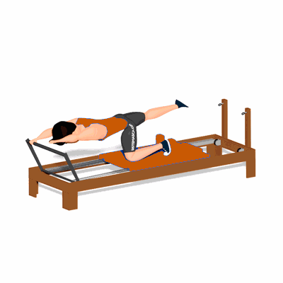

Pushing One Side Arm

O exercício trabalha o fortalecimento dos músculos do ombro, costas, glúteos posteriores da coxa e abdômen.
Ficha Técnica
Tipo: Pilates
Grupo Muscular: Corpo
Aparelho: Nenhum
Músculos: Nenhum
Como realizar
- Em decúbito ventral, uma das mãos apoiadas no apoio de pés, com ombro e cotovelo flexionados e a outra mão à frente, com ombro flexionado e cotovelo estendido;
- Uma das pernas para trás, com quadril e joelho estendidos e a outra perna com quadril e joelho flexionados em 90°, sendo o joelho apoiado na cama e o pé no apoio de ombros;
- Realize uma extensão do cotovelo, movimentando a cama do Reformer para trás, mantendo a posição das pernas e do outro braço;
- Retorne a posição inicial.
 RC STORE
RC STORE